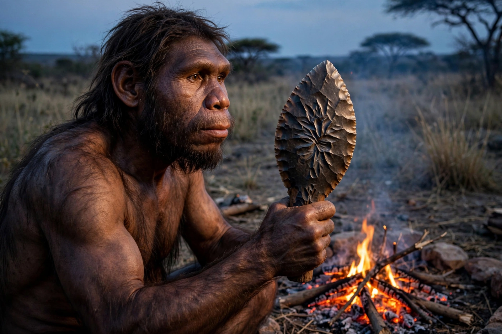

Homo erectus

| Homo erectus | |
| Temporal range | c. 2 million – 110,000 years ago |
|---|---|
| First fossils found | Trinil, Java, 1891 (Eugène Dubois) — "Java Man" |
| Brain size | c. 550–1,250 cm³ |
| Range | Africa, Europe, and Asia to Indonesia and China |
Homo erectus ("upright man") is an extinct species of archaic human that lived from about 2 million years ago until roughly 110,000 years ago — one of the longest-surviving species in the genus Homo. It was the first hominin to leave Africa in large numbers, the first with a body plan closely resembling modern humans in height and proportions, and is associated with the Acheulean handaxe industry and, at least in later populations, the controlled use of fire.
Discovery and naming
The Dutch anatomist Eugène Dubois found a skullcap and femur at Trinil on Java in 1891–92 and named the creature Pithecanthropus erectus ("upright ape-man"). In the 1920s–30s, Davidson Black and Franz Weidenreich described "Peking Man" (Sinanthropus pekinensis) from Zhoukoudian in China. Ernst Mayr's synthesis in 1950 united these and the African fossils under the single name Homo erectus, into which some researchers also fold the early African form Homo ergaster.
Anatomy
H. erectus had a long, low skull with a strong brow ridge, a protruding face, no chin, and thick cranial bones. Males stood about 1.8 m tall. The nearly complete skeleton of the Turkana Boy (KNM-WT 15000, c. 1.6 million years old, Kenya) reveals a tall, lean body adapted to endurance walking and running in hot climates — the first truly modern human body plan.
Behaviour
Acheulean handaxes remained remarkably standardised for over a million years. Evidence for habitual fire use strengthens after about 400,000 years ago (hearths at Qesem Cave in Israel reach back to c. 300,000–400,000 years ago), enabling cooking, warmth, and protection. Whether H. erectus possessed language is unknown, though its social hunting and long childhoods suggest complex communication.
Fate
Later populations — including the Ngandong (Solo) people of Java, dated to about 117,000–108,000 years ago — overlapped in time with early modern humans elsewhere. H. erectus is widely considered ancestral, directly or through relatives such as H. heidelbergensis, to Neanderthals, Denisovans, and Homo sapiens.
See also: Homo habilis, Jebel Irhoud